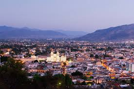

Oaxaca
Oaxaca es una ciudad del centro de México, su legado cultural, artístico y gastronómico, posicionan a la ciudad , como uno de los destinos más importantes del pais.
. Es conocida por sus edificios coloniales, muchos de los cuales están hechos de piedra volcánica verde.
En la plaza central del Zócalo, se encuentra el Palacio de Gobierno, con coloridos murales que representan la historia regional. La plaza Alameda de León está frente a la fachada adornada de la Catedral de Oaxaca.
La iglesia Templo de Santo Domingo del siglo XVI tiene un lujoso interior barroco y un convento antiguo a su lado.
Cosas que puedes hacer mientras estas de visita
- Monte Albán, una de las ciudades más antiguas de América, una antigua capital zapoteca, es quizás el sitio arqueológico más importante de Oaxaca y uno de los más grandes de México.
- Una de las dos llamadas "cascadas petrificadas" en el mundo, Hierve el Agua, que se traduce como Water Boils, es una formación rocosa con piscinas en la cima de un acantilado encima. Los visitantes pueden refrescarse en las aguas de manantial natural, que se promociona por tener propiedades curativas, luego caminar hasta la base de las cascadas.
- Un árbol tan gordo que parece tensarse contra los límites de la plaza circundante, el Árbol del Tule (el Arbol del Tule) tiene al menos 2000 años, lo que lo convierte en una de las entidades vivientes más antiguas del mundo.
- Zipolite, o Playa Zipolite, es una comunidad de playa que a menudo se conoce como el paraíso hippie de México. Este tramo de playa de 1,5 kilómetros parece perdido en el tiempo con su lento ritmo de vida. La playa está dividida en varias áreas: el extremo oriental se llama Colonia Playa del Amor, la parte central es Centro y el extremo occidental es Colonia Roca Blanca.
- En 1998, este parque nacional, que se extiende por decenas de miles de acres de la campiña de Oaxaca, fue declarado área protegida y luego designado como reserva de la biosfera por la UNESCO. Como resultado, el Parque Nacional Huatulco se ha convertido en un destino para los viajeros que buscan volver a la naturaleza y observar especies raras de animales y aves que no existen en ningún otro lugar del mundo.
- El Parque Ecológico y las Ruinas de Copalita (Parque Eco Arqueológico Copalita) se encuentran a orillas del Océano Pacífico en el área turística de Huatulco. Restos de pirámides, templos, una cancha de pelota y un faro prehispánico salpican el exuberante paisaje del parque arqueológico, que también incluye una enorme piedra que se cree que alguna vez se usó en sacrificios.
- Mitla, una ruina mixteca / zapoteca relativamente pequeña, se destaca por la mampostería geométrica detallada y bien conservada que decora los edificios.
Me encanta la playa y la diversidad que hay de ellas en mi pais, Puerto escondido; para mi es una de las
playas más hermosas de México, por sus colores, su vegetación y por su autenticidad.

Al igual que la playa de esta ciudad, me gustaria conocer el corazon de ella, sus calles coloridas,
sus monumentos y estructuras como sus iglesias, su historia como sus tradiciones.
